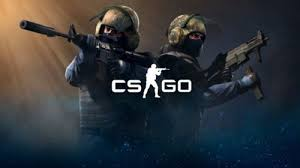

Загальний ігровий процес Global Offensive подібний до попередніх ігор серії Counter-Strike. Global Offensive є мультиплеєрним шутером від першої особи, де кожен гравець приєднується до команди терористів або спецвійськ (контртерористів), щоб перемогти ворожу команду. В кожній команді є по 5 бійців. Гра триває впродовж кількох раундів, які закінчуються, коли всі бійці на одній стороні мертві або виконано поставлену ціль.

На початку кожного раунду команди з'являються у себе на «базах». Бійці володіють запасом здоров'я, початковою зброєю і коштами. Навколо баз існує «зона покупок», в межах якої впродовж обмеженого часу можливо придбати додаткову зброю та спорядження. Користуючись зброєю, укриттями, знанням місцевості (карти) та командною співпрацею, гравці намагаються виконати завдання, що залежить від обраного заздалегідь режиму. Здійснюючи успішні дії, бійці отримують кошти, а після завершення раунду отримують додаткову винагороду — більшу в разі перемоги та меншу в разі поразки. В той же час кошти знімаються за вбивство товаришів по команді або заручників терористів. Гравці, чий персонаж був убитий, можуть спостерігати за боєм до кінця раунду.